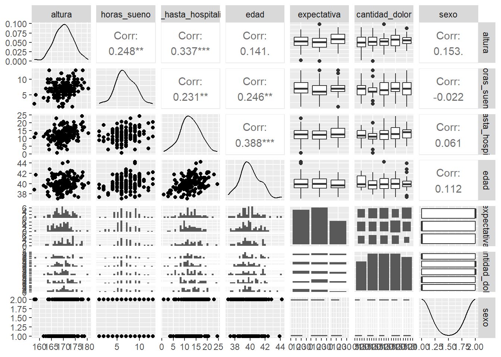
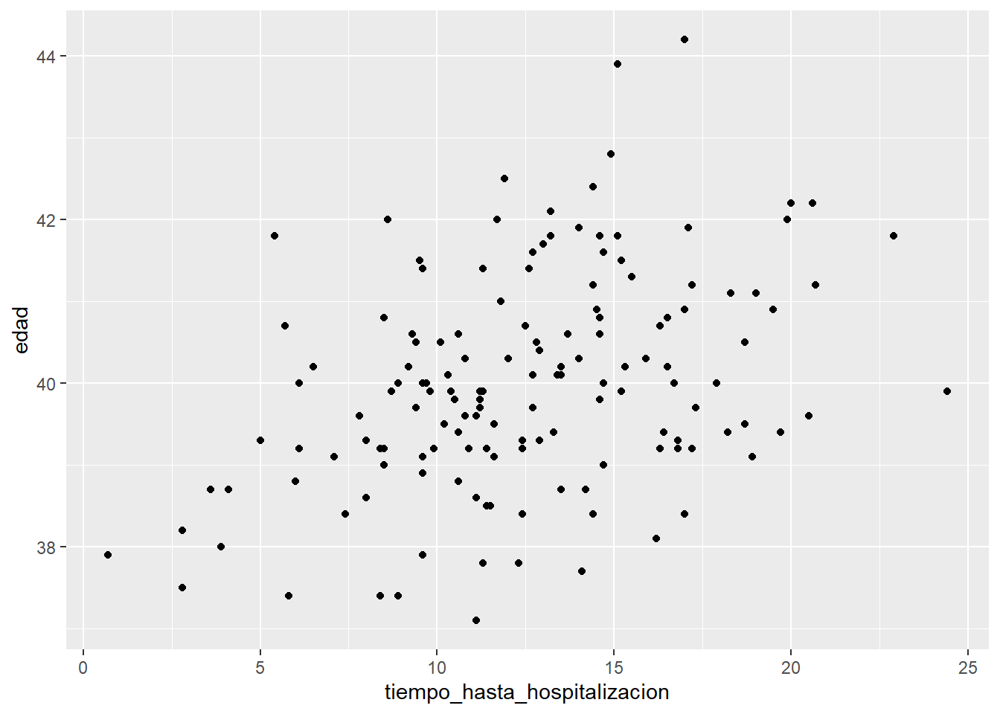
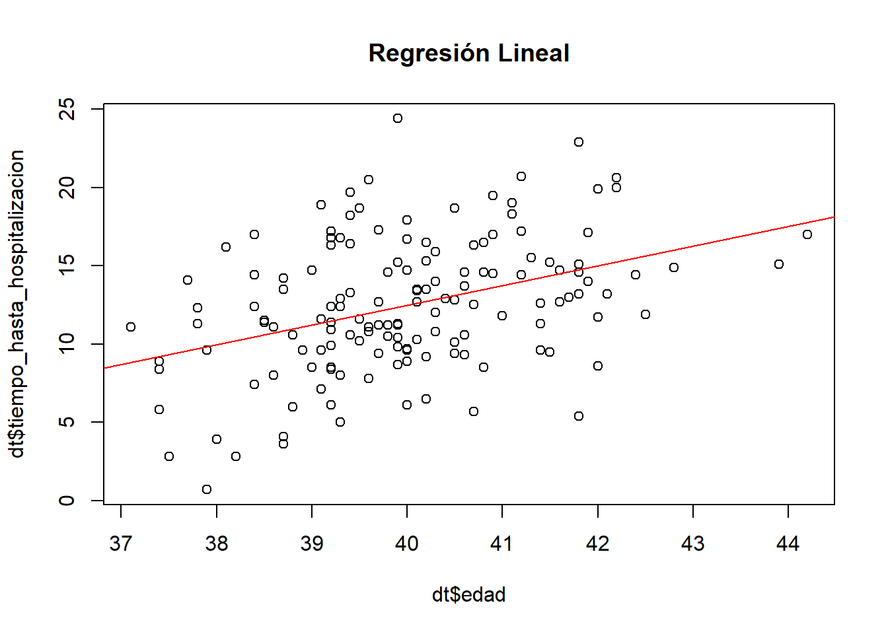
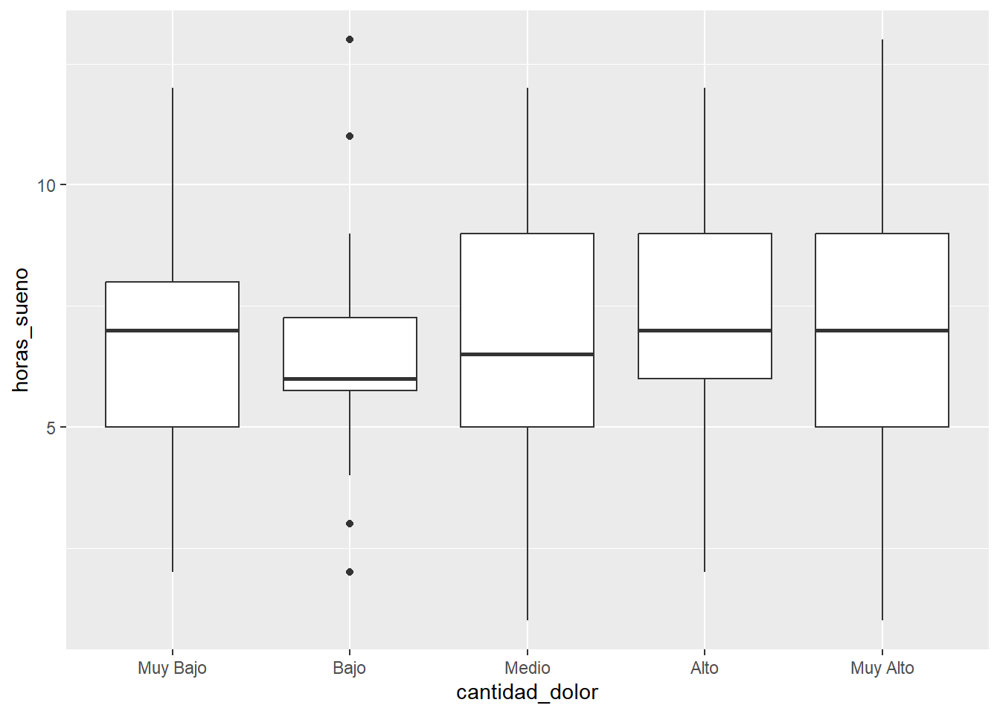

Rows: 150
Columns: 9
$ altura <dbl> 170.4, 169.7, 170.9, 170.0, 170.5, 172.8,…
$ horas_sueno <dbl> 6, 6, 8, 6, 5, 7, 11, 1, 5, 10, 9, 3, 8, …
$ tiempo_hasta_hospitalizacion <dbl> 16.8, 13.5, 16.8, 20.7, 15.3, 10.4, 12.9,…
$ edad <dbl> 39.2, 40.2, 39.3, 41.2, 40.2, 39.9, 39.3,…
$ expectativa <ord> Estable, Estable, Mejorar, Empeorar, Esta…
$ cantidad_dolor <ord> Medio, Bajo, Muy Bajo, Muy Alto, Muy Alto…
$ calidad_estancia <ord> Muy Mala, Mala, Muy Buena, Muy Mala, Mala…
$ sexo <chr> "Mujer", "Hombre", "Hombre", "Mujer", "Ho…
$ razon_alta <chr> "Otras Causas", "Fallecimiento", "Mejoria…Taller evaluado de repaso para el Primer Parcial
20582- Análisis de Datos para el GMAT
Elige un tema que te interese (finanzas, medio ambiente, educación, cine, entre otros). En este taller, aplicarás los pasos del método científico (ver sección 1.1 de los apuntes de la asignatura) para abordar, con datos simulados, una problemática relacionada con el tema elegido. Deberás presentar un informe de tu proyecto siguiendo la estructura detallada en el documento “Recomendaciones para escribir informes de proyectos en Estadística,” que se encuentra en la sección “Práctica” de la página del curso en Aula Digital.
Primer paso:
Define los objetivos de tu trabajo: Describe la hipótesis general que deseas investigar y especifica los objetivos específicos necesarios para validar o refutar dicha hipótesis.
Nos centraremos en el estudio de internación hospitalaria en España, definiremos como variables cuantitativas “altura”, “horas_de_sueño”, “tiempo_hasta_hospitalizacion” y “edad”, donde la altura está en centímetros y el tiempo hasta hospitalización en días, esté último intenta reflejar el efecto de tardar demasiado a acudir a un serivicio de salud.
Para las ordinales escogemos expectativa, cantidad de dolor y calidad de la estancia. De los tres, el más interesante es la expectativa de los individuos de mejorar o no y poder lo comparar posteriormente a la razón de alta.
Para finalizar, escogemos como nominales el sexo y la razón de alta.
Claramente, al ser datos creados, carecerán de sentido estos estudios, pero procedemos imaginando que son valores genuinos.
Algunas de las hipótesis que nos podríamos plantear:
- Posible relación Edad-Tiempo hasta hospitalización:
Para este objetivo necesitamos ver un test de correlación entre las dos variables y ver si esta es o no lo suficiente alta
- Relación horas de sueño con cantidad de dolor:
Similar a lo anterior, con un Heat Map podremos solucionar-lo.
- Gente con bajas expectativas implica mayor incidencia de defunción y análogo con altas expectativas:
Podemos usar contraste de hipótesis simple donde la hipótesis nula sea que la probabilidad de defunción con bajas expectativas sea mayor que por ejemplo la de expectativa estable.
Segundo paso:
Define las variables clave para probar tu hipótesis. Asegúrate de incluir al menos cuatro variables cuantitativas, tres ordinales y dos nominales. Indica las unidades de medida para las variables cuantitativas y los niveles para las variables nominales y ordinales. A continuación, simula los datos en R de acuerdo a las siguientes pautas:
- Tabla 1: Genera una tabla con al menos 100 observaciones y las variables definidas en el paso anterior, asegurate que las variables cuantitativas sigan una distribución normal multivariante.
- Tabla 2: Consigue algunos datos en Internet que puedas utilizar para ayudar a resolver tu problema (una variable o dos basta), algunas ideas de dónde buscar son: datos abiertos del Gobierno de España, INE, Kaggle, etc.
Une ambas tablas utilizando un identificador simulado en una base de datos única. Emplea las funciones del paquete tidyverse explicadas en la sección 1.7.5 de los apuntes de la asignatura. Esta parte es opcional, pero te permitirá enriquecer tu base de datos y realizar análisis más completos.
Usaremos el siguiente data.frame: Estancia Media para añadir información a los valores generados, imaginemos que la población del estudio sufren turberculosis, denotado por el codigo 0103 en el data.frame del GOB.
Los días que suelen estar hospitalizados hasta darse de alta son 21.57 para ambos sexos, 24.3 para hombres y 15.66 para mujeres. Entonces imaginemos que sigue una distribución normal con un sigma desconocid que nos inventaremos, ya que no hay información de esta en los bancos de datos sobre tuberculosis.
Si la media de días ingresado es de unos 21.57 podemos imaginarnos que no puede tener gran desviación e imponemos \(\sigma^2=3\)
Entonces esta variable \(X\sim N(21.57,3)\), hacemos una simulación de 150 datos y la añadimos al dataframe inicial:
Rows: 150
Columns: 10
$ altura <dbl> 170.4, 169.7, 170.9, 170.0, 170.5, 172.8,…
$ horas_sueno <dbl> 6, 6, 8, 6, 5, 7, 11, 1, 5, 10, 9, 3, 8, …
$ tiempo_hasta_hospitalizacion <dbl> 16.8, 13.5, 16.8, 20.7, 15.3, 10.4, 12.9,…
$ edad <dbl> 39.2, 40.2, 39.3, 41.2, 40.2, 39.9, 39.3,…
$ expectativa <ord> Estable, Estable, Mejorar, Empeorar, Esta…
$ cantidad_dolor <ord> Medio, Bajo, Muy Bajo, Muy Alto, Muy Alto…
$ calidad_estancia <ord> Muy Mala, Mala, Muy Buena, Muy Mala, Mala…
$ sexo <chr> "Mujer", "Hombre", "Hombre", "Mujer", "Ho…
$ razon_alta <chr> "Otras Causas", "Fallecimiento", "Mejoria…
$ duracion_estancia <dbl> 23.4, 21.7, 23.9, 25.4, 22.7, 21.1, 22.8,…Tercer paso
Realiza un análisis descriptivo multivariantes de tu base de datos de acuerdo a los objetivos de tu trabajo. Describe lo observado en el contexto del problema.
Primero veremos si existe alguna correlación entre Edad-Tiempo_hasta_hospitalización y Horas_de_sueño- Dolor, usaremos la función ggpairs para conseguirlo.

Mágicamente, aun siendo datos simulados, podemos ver una leve correlación entre edad y tiempo_hasta_hospitalización. Aunque muchas de nuestras variables muestran cierta correlación menos con el sexo.
Veamos más de cerca el gráfico de puntos que nos aporta ggpairs:

Podemos intuir una regresión lineal muy muy de débil gracias al gráfico, ya que a mayor edad, mayor el tiempo hasta hospitalización de medio.
Call:
lm(formula = tiempo_hasta_hospitalizacion ~ edad, data = dt)
Residuals:
Min 1Q Median 3Q Max
-9.3588 -2.7257 -0.2831 2.6353 12.0379
Coefficients:
Estimate Std. Error t value Pr(>|t|)
(Intercept) -37.967 9.838 -3.859 0.000169 ***
edad 1.261 0.246 5.129 9.01e-07 ***
---
Signif. codes: 0 '***' 0.001 '**' 0.01 '*' 0.05 '.' 0.1 ' ' 1
Residual standard error: 3.953 on 148 degrees of freedom
Multiple R-squared: 0.1509, Adjusted R-squared: 0.1452
F-statistic: 26.3 on 1 and 148 DF, p-value: 9.008e-07El modelo nos dice claramente que hay un gran error mínimo y máximo, por lo que no se ajusta bien a los puntos debido al valor bajísimo de R_squared=0.1452. Por lo tanto, negamos que pueda seguir una modelo de regresión lineal.
Añadimos la recta de regresión al gráfico anterior

Al añadir la recta podemos ver claramente lo mal ajustada que está a los puntos de la gráfica.
Respecto la relación Horas de Sueño-Dolor, podemos veamos mas en detalle el estudio con boxplots que nos ofrece ggpairs.

De nuevo, al ser datos simulados pueden carecer de sentido. Por lo que parece, estadísticamente hablando la media de horas de sueño de media no varía, carece de sentidom ya que a mayor dolor, más duermen en general los pacientes.
Veamos con un contraste si la hipótesis nula \(H_0: \mu_i=\mu_j\; \forall i,j\) es o no cierta. Al no saber si los valores de varianza son o no iguales usaremos la función pairwise.wilcox.test para descubrir si tienen mismas medias.
Pairwise comparisons using Wilcoxon rank sum test with continuity correction
data: sub_data$horas_sueno and sub_data$cantidad_dolor
Muy Bajo Bajo Medio Alto
Bajo 1 - - -
Medio 1 1 - -
Alto 1 1 1 -
Muy Alto 1 1 1 1
P value adjustment method: holm Gracias a la función que hemos comentado podemos afirmar la hipótesis nula con muchísima seguridad, este resultado perfecto parece muy extraño, pero se han comprobado con otros metodos de contraste con resultados iguales, algunos de los intentados son pairwise.t.test, kruskal, etc… Por lo tanto, estadísticamente hablando tienen la misma media.
Pacientes con valores de dolor bajo parecen tener un sueño más consistente, menos algunos valores atípicos. Si los pacientes con valores muy bajos de dolor tuviesen sueño consistente podríamos intuir alguna relación. La media de horas de sueño ronda las 6.8 horas, lo cual es más o menos normal debido a la edad de los sujetos, la cual ronda los 40.
Para las variables cuantitativas de tu base de datos, calcula e interpreta la información que proporciona la varianza generalizada y la varianza total.
Encontremos la matriz de convarianzas de los datos cuantitativos primero:
Ahora que tenemos tanto la matriz como sus valores própios, podemos calcular la varianza generalizada y la varianza total.
Por lo que obtenemos una varianza generalizada de 1952.75 y una varianza total de 41.64.
Al entender la varianza generalizada como la dispersión global del conjunto de variables dadas, podemos ver como tiene un valor altísimo, seguramente debido a que las variables están simuladas aleatoriamente.
En cambio, la varianza total como media general de dispersión está relativamente baja si tenemos en cuenta que algunos valores como la altura fluctúan mucho por construcción.
Cuarto paso
Selecciona una de las variables no cuantitativas y modelízala con una distribución multinomial, debes estimar sus parámetros. Utiliza el modelo para calcular la probabilidad de que ocurra un evento de interés en una muestra de tamaño 20, relevante para tu problema.
De las variables no cuantitativas las más interesantes son calidad de la estancia i cantidad de dolor, escogeremos la cantidad de dolor, ya que anteriormente la hemos estudiado un poco.
Usaremos el paquete XNomial para ver si sigue
Muy Bajo Bajo Medio Alto Muy Alto
25 32 32 32 29 [1] 0.1538462 0.2307692 0.2307692 0.2307692 0.1538462
P value (LLR) = 0.7072Por lo tanto, no podemos rechazar la hipótesis nula por lo que la distribución de la variable “cantidad _dolor” sea una multinomial con parámetros (0.15,0.23,0.23,0.23,0.15).
Ahora que sabemos que modelo sigue, veamos qué probabilidad hay de que de 20 encuestados un 80% presente dolor muy alto y 20% alto.
[1] 1.353293e-12Esto nos dará una probabilidad tan cercana al cero que podemos despreciar-la
Quinto paso
Con las variables cuantitativas de tu base de datos, ajusta un modelo de regresión multivariante en la forma:
\[Y=\beta_0+\beta_1 X_1+ \cdots + \beta_p X_p + \epsilon\] Donde \(Y\) es la variable cuantitativa que deseas explicar en función del resto de variables cuantitativas registradas. Además, calcula la función de score e interpreta su resultado en el contexto del problema.
Intentaremos explicar la edad de los pacientes por un modelo de regresión multivariante donde \(X_1\) y \(X_2\) son las horas de sueño y los días hasta hospitalización respectivamente. Escogemos estos debido a que son los que presentan más correlación la variable edad.
Procedemos por método directo calculando los valores \(\beta_i\).
[,1]
38.01
x1 0.09
x2 0.11Por lo tanto, \(\beta_0=38.01\),\(\beta_1=0,09\) y \(\beta_2=0.11\). \[Y=38.01+0.09X_1+0.11X_2 + \epsilon\] Podemos también conseguir-lo usando la función lm de R que además da sus errores:
Call:
lm(formula = y ~ x1 + x2)
Residuals:
Min 1Q Median 3Q Max
-2.7320 -0.7317 -0.0512 0.6413 3.5449
Coefficients:
Estimate Std. Error t value Pr(>|t|)
(Intercept) 38.01321 0.37505 101.354 < 2e-16 ***
x1 0.08974 0.04186 2.144 0.0337 *
x2 0.10790 0.02369 4.555 1.09e-05 ***
---
Signif. codes: 0 '***' 0.001 '**' 0.01 '*' 0.05 '.' 0.1 ' ' 1
Residual standard error: 1.203 on 147 degrees of freedom
Multiple R-squared: 0.1766, Adjusted R-squared: 0.1654
F-statistic: 15.77 on 2 and 147 DF, p-value: 6.251e-07Apartir del valor “Adjusted R_squared” podemos ver como este modelo no se acerca nada bien a los valores de Y, aun así es d’esperar debido a la naturaleza aleatoria de valores simulados con parámetros aleatorios.
Debido a que no nos aporta informació, veamos si podemos explicar alguna otra variable con este método. Probemos explicar los dias hasta hospitalización con la altura y la edad. Escogemos estos debido a la relativamente alta correlación entre ellos.
Call:
lm(formula = dt$tiempo_hasta_hospitalizacion ~ dt$altura + dt$edad)
Residuals:
Min 1Q Median 3Q Max
-9.1597 -2.5311 -0.2272 2.4691 9.6346
Coefficients:
Estimate Std. Error t value Pr(>|t|)
(Intercept) -85.3588 15.2614 -5.593 1.06e-07 ***
dt$altura 0.3096 0.0786 3.939 0.000126 ***
dt$edad 1.1299 0.2371 4.766 4.47e-06 ***
---
Signif. codes: 0 '***' 0.001 '**' 0.01 '*' 0.05 '.' 0.1 ' ' 1
Residual standard error: 3.773 on 147 degrees of freedom
Multiple R-squared: 0.232, Adjusted R-squared: 0.2215
F-statistic: 22.2 on 2 and 147 DF, p-value: 3.767e-09De nuevo, no nos da un gran ajuste, pero es marginalmente mejor que el anterior.
Encontremos la función score de la distribución \(Y=\beta X\), donde \(\beta=(\beta_1,\beta_2)\) y \(X=(1,X_1,X_2)\) por lo tanto tenemos que \(Y\sim N(X,\beta,\sigma^2I)\) gracias a la teoria.
\[f(Y|\beta,\sigma)=\frac{1}{(2\pi\sigma^2)^{\frac{n}{2}}}\exp(-\frac{1}{2\sigma^2}(Y-X\beta)'(Y-X\beta))\] Aplicamos logaritmo y derivamos respecto \(\beta\) y obtenemos: \[Score(\beta)=\frac{\partial l}{\partial \beta}=\frac{1}{\sigma^2}X^T(Y-X\beta)\] Como podemos interpretar esta función? Dos casos, si la función score vale 0 esto implicará que \(Y=X\beta\) y por lo tanto los que minimizan el error \(\epsilon\) de del modelo de regresión. Si, en cambio, este valor no da 0 implicará que existe un error \(\epsilon >0\), y por lo tanto podriamos encontrar un ajuste mejor para el modelo de regresión multivariante.
Sexto paso
Realiza un contraste de hipótesis de dos medias multivariante que sea relevante para tu problema. Por ejemplo, podrías evaluar si el vector de medias de la variable cuantitativa de interés \(Y\) es el mismo para dos niveles distintos de la variable no cuantitativa que modelaste como multinomial en el paso anterior. Ejecuta el contraste tanto teóricamente como con la función hotelling.test en R. Escribe la conclusión del contraste en el contexto de tu problema.
Para este último nos encontraremos con problemas debido a la naturaleza de los datos, hay elementos que rondan numeros altos como la altura y otros que rondas bajos, como las horas de sueño.
Aun así, definimos \(X\) y \(Y\) como las variables horas de sueño y tiempo hasta hospitalización.
\[X\sim N_p(\mu_1,\Sigma), \:Y\sim N_p(\mu_2,\Sigma)\]
\[H_0:\mu_1=\mu_2\] Recordemos que \(n_1=n_2=150\) al estudiar 150 sujetos y que \(p=1\), ya que solo nos fijamos en un variable. Primero vemos teoricamente el contraste, al ser \(\Sigma\) desconocida debemos usar que:
\[\frac{(150+150-1-1)150*150}{(150+150-2)(150+150)}(\bar{x}-\bar{y})'\widehat{S}^{-1}(\bar{x}-\bar{y})\sim F^1_{298}\]
\[33.32256\sim F^1_{298}\]
[,1]
[1,] 2.399437e-144Nos da un valor menor al nivel de significació standard por lo que rechazamos la hipótesis de que sean iguales, lo qual era de esperar ya que no tenemos variables con medias similares